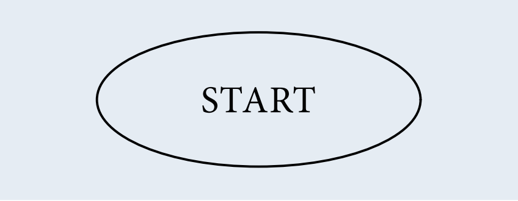
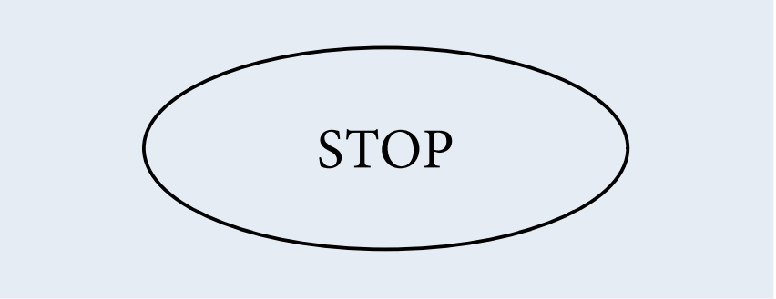
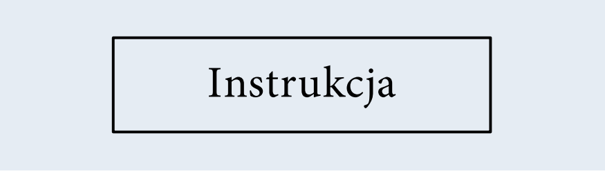
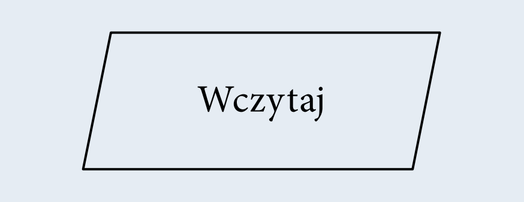

Do popularnych języków skryptowych należą:
| Symbol | Opis |
|  | Początek algorytmu, start programu. Od tego miejsca rozpoczyna się wykonywanie operacji. |
|  | Koniec algorytmu, zakończenie programu. W tym miejscu następuje zakończenie wykonywania operacji. |
| Połączenie między blokami. Wskazuje kolejność wykonywania operacji. | |
|  | Wykonanie operacji, blok obliczeniowy. Wewnątrz tego symbolu znajdują się operacje do wykonania. |
|  | Wprowadzanie danych. Wewnątrz tego symbolu określamy dane wejściowe, które muszą zostać wczytane. |